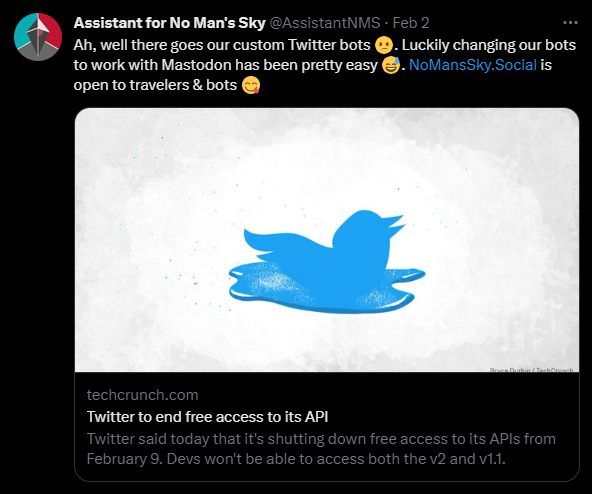
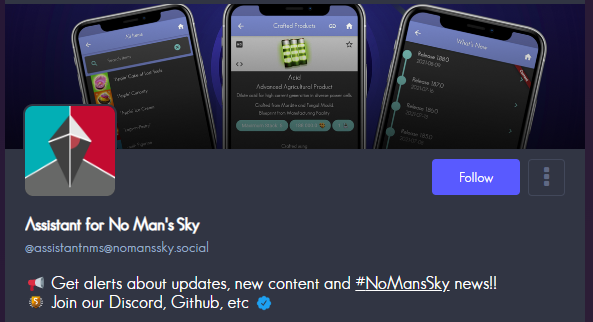

I recently started a Mastodon instance with friends for the No Man's Sky community, mostly due to changes happening on Twitter. You can find our instance here: NoMansSky.Social. It has been a lot of fun setting up and customising the instance!
The event
I had only created a simple Twitter bot before the big Twitter API scandal, all the bot would do is create a tweet when there are certain events.

This was quite a disappointing development, it meant that my Twitter bot would no longer be able to work and if I wanted to get it working again, I would need to pay. I was not going to pay for the simple posting of automated content...
Twitter did change their minds on this, creating Tweets will remain free but reading data from Twitter requires a paid account. Well this is better and would work for me, I am unhappy with how quickly the Twitter overlords can take away features, I would much rather give money to an organisation that creates open source software 🤷
My friends and I had been talking about starting up a Mastodon instance for quite a while, figuring out how much it would cost, if we could moderate it effectively and so on.
Initial thoughts 💭
Getting used to any new tool can be frustrating and there was a bit of a learning curve as a Twitter user coming to Mastodon. Mastodon is very similar to Twitter in a lot of ways and in most scenarios it builds on top of things that Twitter does well. One of the first features that I think most people will appreciate coming from Twitter is being able to edit a Toot (Mastodon version of a Tweet). Did you make a spelling mistake in your Toot? No problem correct it easily!
You also get quite a few customisation options right from the start, but as an admin of an instance, you get a huge amount of extra customisation capabilities!
Customisation 🧑🎨
You also get quite a few customisation options right from the start, but as an admin of an instance, you get a huge amount of extra customisation capabilities! The first thing I started customising was the emojis!

This reminds me a bit of the way you could customise a MySpace profile and I have admittedly gone a bit crazy with all the customisations of our Mastodon instance. Some of the things I have customised:
- Toot character count limit
- This has been set to 1616 as a reference to the number that is repeated by the Atlas in No Man's Sky
- Favicon
- We went with something more No Man's Sky themed
- Custom font
- I had a hand in working on a community NMS-themed font and this was a great project to use the NMS community font
- CSS tweaks
- This is the easiest customisation as the Mastodon instance has a field where you can place custom CSS
- Through this, I added a custom animated background, better dark mode on certain elements, fun elements like a spaceship flying below the compose toot box and a few more
Bots 🤖
I have found the creation of Mastodon bots a lot simpler than Twitter bots. This may not be the case for all bots since my bots are quite simple. At the moment we have around 4 bots, some respond to you when mentioned, one creates a Toot when events happen in-game and another generates an image with the details of the current live event information from the game.
Conclusion
I am really happy that we jumped into the world of Mastodon, it has been a lot of fun learning how to set up and maintain a Mastodon instance. I would suggest that you try out Mastodon! Feel free to join our instance and create your own No Man's Sky themed bot 😁